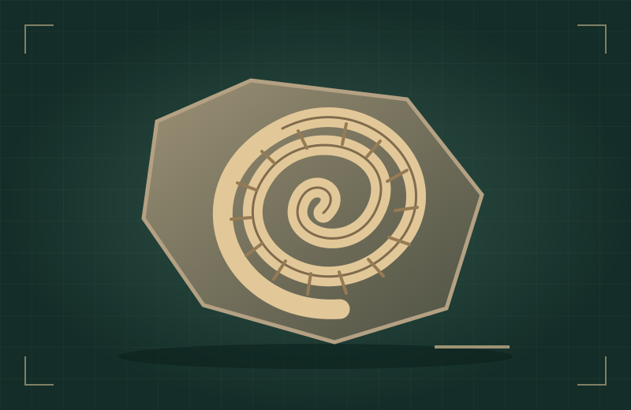
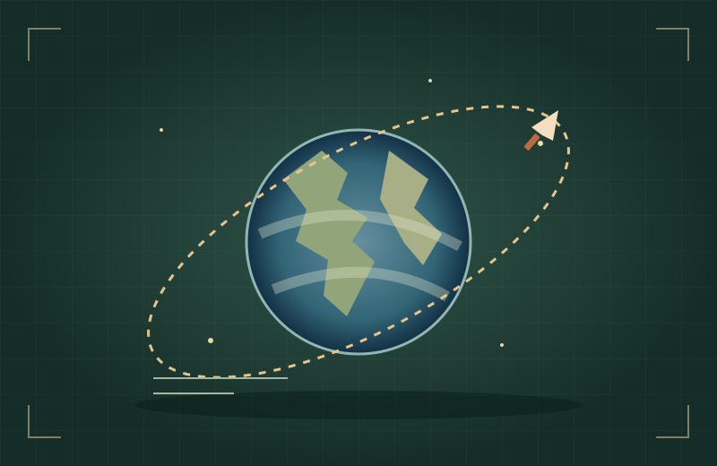
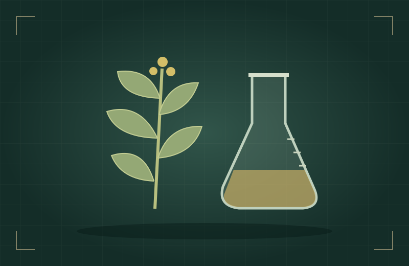
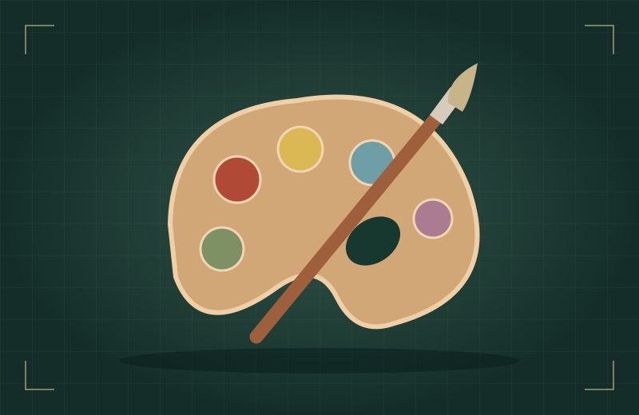

O NOME VEM DEPOIS DA DESCOBERTA
Primeiro,
a história.
Depois, ela.
Investigue objetos, conecte pistas e escolha quatro histórias para o seu museu. Quem está por trás delas?
8 vitrines · 3 tipos de desafio · 4 escolhas suas




ACERVO SEM NOMES.
HISTÓRIAS PARA DESCOBRIR.01 · Investigue
Observe as imagens e resolva um pequeno desafio.
02 · Faça a curadoria
Reserve quatro histórias. As identidades aparecem na inauguração.
SALA 01 / VITRINES MISTERIOSAS
O que chama sua atenção?
Abra uma vitrine. Encontre a conexão. Escolha pela história.
Uma pergunta para orientar seu olhar:
SALA 02 / O FIO QUE CONECTA
Sua exposição tem uma ideia.
SALA 03 / O MUSEU ESTÁ ABERTO
Conheça as mulheres por trás das histórias que você escolheu.
A CURADORIA CONTINUA
O que sua exposição tornou visível?
Que história ficou de fora e poderia mudar essa narrativa?